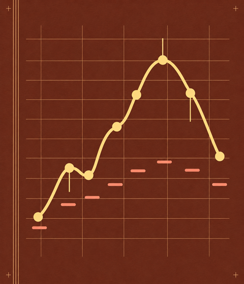

全部教材
设置
主题配色
纸白
米浆
雾蓝
淡紫
烟粉
薄荷
琥珀
石墨
午夜蓝

歌曲写作教程
从读懂歌词的语气、写出主题乐句开始，把旋律发展成完整的歌曲。上篇讲乐句、乐段和整曲布局，下篇讲声调、行腔、体裁和演唱。
从第一章开始
→
本书程序谱
→
上篇
第一章
歌曲写作的整体构思
第二章
主题乐句的写作
第三章
旋律发展手法
第四章
乐段结构歌曲的写作（上）
第五章
乐段结构歌曲的写作（中）
第六章
乐段结构歌曲的写作（下）
第七章
两段体歌曲写作
第八章
三段体歌曲写作
第九章
多段体歌曲写作和歌曲结构布局
第十章
固定音调、固定节奏的贯串和音调引用
第十一章
前奏（引子）、间奏、后奏（尾声）
下篇
第十二章
曲调与声调
第十三章
装饰变音、色彩变音、离调、特性调式变音和转调
第十四章
拖腔、重复歌词、衬词
第十五章
歌曲的常见体裁
第十六章
艺术歌曲特征
第十七章
通俗歌曲特征
附录
演唱、定调与歌曲题头